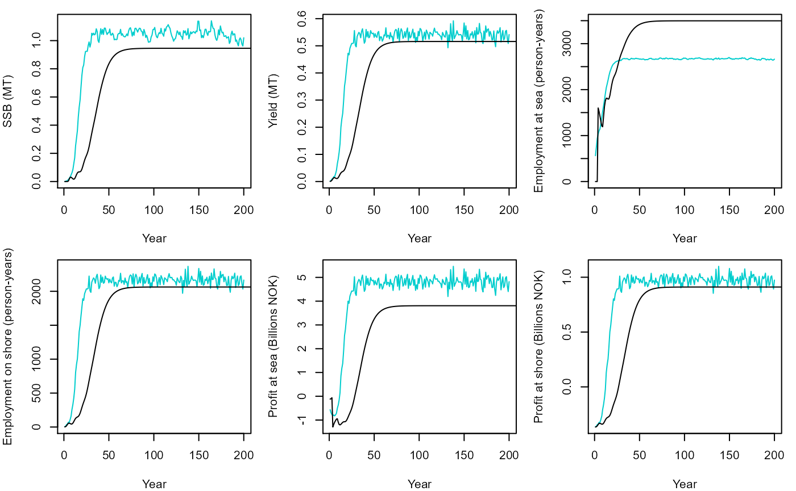
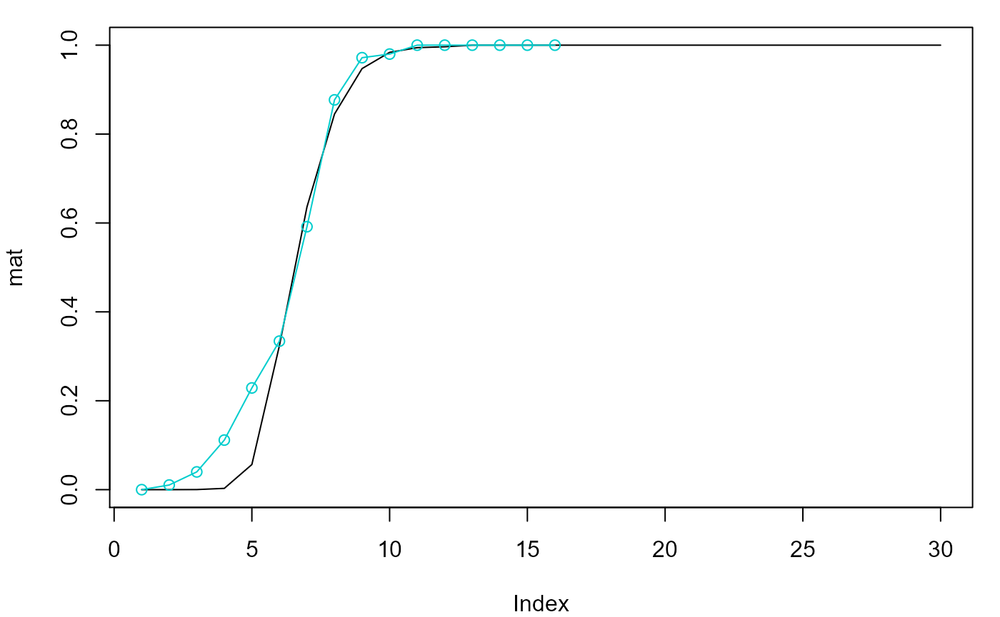

Simulating a fished population
Jaideep Joshi
28 March 2022
fished_population.RmdTo simulate a fished population, it is essential to first simulate an unfished population until equilibrium. The properties of such an unfished equilibriated population must be used to simulate a fished population.
Quickly simulating an unfished population to equilibrium
It is possible to manually simulate a non-fished population to
equilibrium as demonstrated in the previous tutorial. But there’s an
easier way: to quickly simulate an unfished population, we can use the
function noFishingEquilibriate().
# Create a prototype fish as usual
fish = new(Fish)
fish$par$s0 = 0.09637
fish$par$Bhalf_growth = 100e11
# Create a population
pop_K = new(Population, fish)
pop_K$set_superFishSize(1e6)
# Equilibriate under no-fishing conditions
K_ibm = pop_K$noFishingEquilibriate()Using a simulator to simulate populations
The rfish package provides a simulator to easily
simulate populations of fish without the hassle of manual updating. The
simulator can also simulate multiple populations with different control
parameters at once, making it very convenient to analyse the control
space (we will look at the control space in a later tutorial).
To create a simulator, we need again need to specify a prototype fish:
sim = new(Simulator, fish)copying the non-fished population in the simulator
Before we can simulate a fished population, we need to copy the equilibriated non-fished population in the simulator. The simulator will calculate the required properties on this population in order to simulate a fished population.
sim$setNaturalPopulation(pop_K)Simulating a fished population
Finally, we are ready to simulate a fished population. We create a population to be simulated and set its parameters
pop = new(Population, fish)
pop$par$Bhalf = 365426284/4.7
pop$set_superFishSize(2e5)Then, suppose we want to simulate this population for 200 years with a harvest proportion of 0.3 and minimum size limit of 45,
nsteps = 200
h = 0.3
lf = 45we simply do
res_ibm = sim$simulate(pop, lf, h, nsteps, T)The last argument is a flag to re-initialize the population before simulating. If this flag is set to false, simulation will continue from the current state of the population, allowing us to simulate different control regimes over time.
Let’s plot the output from the simulation (compared with the model of Dankel et al.XXX)
##
## 1 2 3 4 5 6 7 8 9 10 11 12 13 14 16 17
## 7910 3629 2095 1233 733 409 223 127 82 39 24 11 11 4 2 1
par(mfrow = c(2,3), mar=c(4,4,1,1))
ssb.max = max(c(res_ibm$ssb/1e9, res$summaries$SSB/1e9))
plot(y=res_ibm$ssb/1e9, x=seq(1,nsteps,1), ylab="SSB (MT)", xlab="Year", col="cyan3", type="l", ylim=c(0,ssb.max))
points(y=res$summaries$SSB/1e9, x=res$summaries$year, type="l")
yield.max = max(c(res_ibm$yield/1e9, res$summaries$Y/1e9))
plot(y=res_ibm$yield/1e9, x=seq(1,nsteps,1), ylab="Yield (MT)", xlab="Year", col="cyan3", type="l", ylim=c(0,yield.max))
points(y=res$summaries$Y/1e9, x=res$summaries$year, type="l")
emp.max = max(c(res_ibm$employment.sea, res$summaries$D.sea))
plot(y=res_ibm$employment.sea, x=seq(1,nsteps,1), ylab="Employment at sea (person-years)", xlab="Year", col="cyan3", type="l", ylim=c(0,emp.max))
points(y=res$summaries$D.sea, x=res$summaries$year, type="l")
emp.max = max(c(res_ibm$employment.shore, res$summaries$D.shr))
plot(y=res_ibm$employment.shore, x=seq(1,nsteps,1), ylab="Employment on shore (person-years)", xlab="Year", col="cyan3", type="l", ylim=c(0,emp.max))
points(y=res$summaries$D.shr, x=res$summaries$year, type="l")
p.sea.max = max(c(res_ibm$profit.sea/1e9, res$summaries$P.sea/1e9))
p.sea.min = min(c(res_ibm$profit.sea/1e9, res$summaries$P.sea/1e9))
plot(y=res_ibm$profit.sea/1e9, x=seq(1,nsteps,1), ylab="Profit at sea (Billions NOK)", xlab="Year", col="cyan3", type="l", ylim=c(p.sea.min,p.sea.max))
points(y=res$summaries$P.sea/1e9, x=res$summaries$year, type="l")
p.shr.max = max(c(res_ibm$profit.shore/1e9, res$summaries$P.shr/1e9))
p.shr.min = min(c(res_ibm$profit.shore/1e9, res$summaries$P.shr/1e9))
plot(y=res_ibm$profit.shore/1e9, x=seq(1,nsteps,1), ylab="Profit at shore (Billions NOK)", xlab="Year", col="cyan3", type="l", ylim=c(p.shr.min,p.shr.max))
points(y=res$summaries$P.shr/1e9, x=res$summaries$year, type="l")
par(mfrow=c(1,1))
d = pop$get_state()
d1 = d %>% group_by(age) %>% summarize(mat = length(which(isMature))/length(isMature))
plot(mat, type="l")
points(d1$mat~d1$age, type="o", col="cyan3")